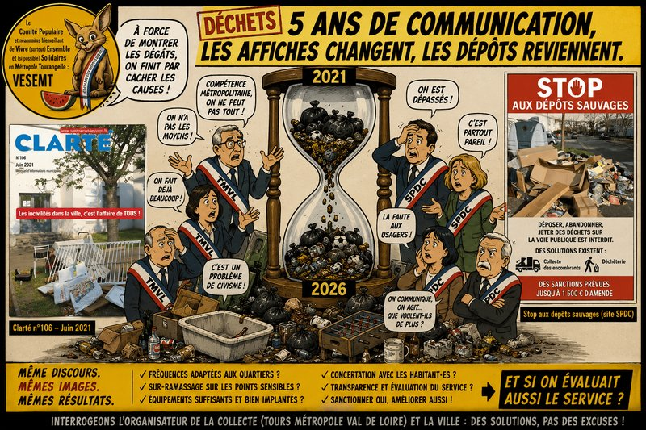

Le coupable idéal a toujours l’avantage de ne jamais répondre
À Saint-Pierre-des-Corps, il semblerait que les déchets aient trouvé leur responsable.
- Pas besoin d’enquête.
- Pas besoin de diagnostic.
- Pas besoin d’aller voir ailleurs sur ce problème qui existe partout en France
- Pas besoin d’évaluer le fonctionnement du service.
Le verdict est tombé avant même l’ouverture du dossier :
« Les habitant.es manquent de civisme. » Cette façon d’aborder la question n’est pas nouvelle.
-
En juin 2021, quelques mois après l’installation de la nouvelle équipe municipale, le magazine Clarté faisait sa Une sur les incivilités avec un dossier de trois pages intitulé « Finissons-en avec les incivilités ! ». Les photographies parlaient d’elles-mêmes : baignoire abandonnée, lit, baby-foot, bouteilles, déchets alimentaires, sacs éventrés… Le message était limpide : le problème venait avant tout des comportements individuels. Le dossier rappelait également les sanctions encourues, pouvant aller jusqu’à 1 500 € d’amende.
-
Cinq ans plus tard, la même logique se retrouve encore sur le site officiel de la Ville avec la campagne « Stop aux dépôts sauvages », illustrée par des photographies et un rappel des interdictions, des solutions existantes (collecte des encombrants, déchèterie) et des sanctions applicables.
Il ne s’agit donc pas d’une communication ponctuelle.
Elle dessine une ligne constante : montrer les conséquences des incivilités, rappeler les règles et appeler au civisme. Or cette approche, si elle est parfaitement légitime pour condamner les comportements fautifs, ne peut pas devenir l’unique grille de lecture d’un problème aussi complexe.
- C’est pratique, un coupable idéal.
- Il ne siège pas au conseil municipal.
- Il ne répond pas aux conférences de presse.
Et surtout, il évite de se poser la seule question qui dérange :
Le service est-il encore adapté aux réalités du terrain ?
Nous condamnons les dépôts sauvages. Mais nous refusons les raccourcis.
Soyons parfaitement clairs.
- Les dépôts sauvages sont inacceptables.
- Les personnes qui abandonnent volontairement leurs déchets sur la voie publique portent une responsabilité que personne ne peut nier.
- Qui pourrait se prévaloir de conserver sa ville sale : Pas nous !
Nous les condamnons, sans ambiguïté, comme la très grande majorité des habitant.es.
Mais reconnaître cette responsabilité ne dispense jamais les pouvoirs publics d’examiner la leur.
- Un service public ne peut pas être évalué uniquement à travers les fautes de ses usager.ères.
- Avoir en permanence, aux mêmes endroits ces dépôts envoie « le message : c’est possible ici car il y a une tolérance » , que la présence quasi permanente de déchets conforte
Il doit aussi être interrogé sur son efficacité, son organisation et sa capacité d’adaptation. Sinon, autant fermer les services publics et ouvrir des écoles de morale.
Quand le thermomètre indique de la fièvre, on peut toujours l’accuser de mentir…
- Imaginons un restaurant. Les client.es repartent chaque soir mécontent.es. Le patron conclut : « Le problème, ce sont les client.es. »
- Le mois suivant, les mêmes client.es reviennent. Toujours mécontent.es. Même conclusion.
À un moment, ce n’est plus de la gestion.C’est une carrière dans le déni.
Un service public fonctionne exactement de la même manière. Lorsqu’un problème revient sans cesse au même endroit, il faut peut-être arrêter d’accuser uniquement celles et ceux qui le subissent.
Les dépôts sauvages ne poussent pas spontanément comme des champignons après la pluie. Ils apparaissent le plus souvent souvent… juste à côté des équipements prévus pour recevoir les déchets.
Cette répétition devrait interpeller. Elle devrait conduire à se demander :
- les tournées sont-elles adaptées ?
- les équipements sont-ils suffisants ?
- les horaires correspondent-ils aux usages ?
- les fréquences sont-elles encore cohérentes ?
« Parce qu’un dysfonctionnement répété est parfois moins le portrait d’une population que le miroir d’une organisation. »
Une compétence métropolitaine n’est pas un parapluie politique
Oui.
La collecte est organisée par Tours Métropole Val de Loire. Mais les sacs poubelles et autres déchets eux, n’ont pas lu les statuts de la Métropole.
- Ils restent sur les trottoirs.
- Ils ne disparaissent pas parce qu’un organigramme dit que la compétence appartient à quelqu’un d’autre.
Le rôle d’une municipalité n’est pas de commenter les frontières administratives. Il est de défendre les intérêts de ses habitant.es.
Dire : « Notre ville est confrontée à un problème de collecte. Nous demandons une adaptation du service. ». n’est ni une déclaration de guerre, ni un crime de lèse-métropole. C’est simplement faire son travail.
« Et surtout ne pas laisser les habitantEs dans le sentiment d’être négligés, abandonnés, que la réitération du message de la ville qui en creux montre son impuissance . Impuissance terreau des ressentiiments sur lequel recrute les facistes »
Le chien aboie… et les déchets encombrent
À force d’expliquer que tout commence et tout finit avec le manque de civisme, on finit par construire un récit où le service public serait infaillible par définition.
Pendant ce temps…
- Les mêmes points débordent.
- Les mêmes photographies reviennent.
- Les mêmes indignations sont recyclées.
Le chien aboie… la communication passe. Et les déchets, eux, restent.
Peut-être est-il temps de compléter le discours.
Continuer à rappeler les règles, oui.
Mais avoir aussi le courage d’évaluer l’organisation du service lorsqu’elle montre ses limites.
Il existe pourtant une autre façon de faire
Contrairement à ce que l’on pourrait croire, adapter un service public n’est pas une idée révolutionnaire.
C’est même son principe.
Tours Métropole elle-même applique déjà des fréquences de collecte différentes selon les secteurs.
Le centre-ville de Tours ne bénéficie pas des mêmes tournées que les secteurs moins denses.
Pourquoi ?
Parce que les usages ne sont pas identiques.
Alors pourquoi cette logique d’adaptation deviendrait-elle soudain impossible dès qu’il s’agit de Saint-Pierre-des-Corps ?
Parmi les pistes concrètes et déjà existantes:
- instaurer un sur-ramassage ciblé sur les points les plus problématiques ;
- adapter les fréquences selon les besoins réels des quartiers ; Le ramassage en Centre ville de Tours est-il le même que dans nos quartiers ?
- réévaluer l’implantation des points d’apport volontaire ;
- associer les habitant.es aux diagnostics de terrain ;
- publier des indicateurs permettant d’ajuster le service plutôt que de commenter ses conséquences.
Une organisation intelligente commence par observer avant de juger.
Et si on essayait autre chose que les sermons ?
Les campagnes de communication ont parfois un défaut.
Elles donnent l’impression que la mairie distribue des bulletins de conduite.
Pourquoi ne pas choisir l’humour, vu que les « caméras » dans l’espace public sont par nature un excellent dérivatif aussi inutile pour la sécurité quotidienne qu’hilarant » ?
On imagine très bien une série de panneau installés à côté des points d’apports volontaires sur lesquels figurent :
- Une personne dépose correctement ses déchets.
- Au-dessus : Un sourire/ Un clin d’œil., Puis cette cette phrase : « Souriez, vous êtes filmé… par votre conscience citoyenne ! »
- En dessous : « Merci de laisser à votre ville autre chose que vos déchets. »
L’humour désarme souvent mieux que les remontrances qui stigmatisent :Il rassemble là où la culpabilisation divise.
Une ville propre ne se décrète pas. Elle s’organise, car :
-
« Les habitant.es ne sont ni des figurant.es dans une campagne de communication, ni des prévenu.es permanents.
-
Ils et elles sont les premier.ères partenaires d’un service public qui doit savoir évoluer lorsque la réalité le lui demande.
-
Notre Métropole est un territoire de solidarité qui ne peut se concevoir qu’avec la même efficacité de service quelque soit le lieu où on habite et notre maire a le droit et le devoir en être le garant. »
C’est dans cet esprit qu’a été proposée, lors de la réunion publique sur le budget 2025 à la Rabaterie, puis rappelées au Maire lors de notre rencontre post-élection puis à un adjoint, la mise en place d’un sur-ramassage ciblé sur les secteurs les plus touchés comme dans d’autres villes comme Joué-lès-Tours
Non pour excuser les comportements fautifs. Mais parce qu’une politique publique sérieuse poursuit deux objectifs à la fois :
« Sanctionner les comportements inacceptables ; le moins possible; en améliorerant le service rendu par une prévention et des informations sans cesse réitérés. Opposer ces deux ambitions, en prioriser une seule, est une erreur. Les réunir est une politique certainement plus efficace »
Abd-El-Kader AIT-MOHAMED
• Locataire HLM de la Tour de la Galboisière et « Fier de l’être ».
• Membre du Comité populaire et néanmoins bienveillant de Vivre (surtout) Ensemble et (si possible) Solidaires en Métropole Tourangelle (VESEMT).
Références citées (à retrouver au sein de notre chronologie documentaire complète et bienveillante de la communication de la ville plus loin)
- Clarté – Juin 2021 : « Finissons-en avec les incivilités ! » — Dossier de trois pages consacré aux dépôts sauvages, illustré par des photographies de baignoire, lit, baby-foot, bouteilles, déchets alimentaires… avec rappel des sanctions pouvant aller jusqu’à 1 500 €. https://saintpierredescorps.fr/sites/default/files/mairiestpierre/fichiers/clarte_juin_2021_-_web.pdf
- Site de la Ville – 2026 : « Stop aux dépôts sauvages » — Campagne municipale rappelant les interdictions, les solutions existantes (collecte des encombrants, déchèterie) et les sanctions. https://saintpierredescorps.fr/actualites-agenda/stop-aux-depots-sauvages-0
#SaintPierreDesCorps #VESEMT #ToursMétropole #TMVL #Déchets #Propreté #ServicePublic #ParticipationCitoyenne #Rabaterie #VillePropre #SurRamassage #ÉducationPopulaire #CadreDeVie
____________________________
ANNEXE – Chronologie documentaire (mars 2020 – aujourd’hui)
2021
Juin 2021 – Clarté
« Finissons-en avec les incivilités ! »
Le magazine municipal consacre un dossier aux dépôts sauvages, met en avant le coût de leur ramassage et rappelle les sanctions encourues. Il insiste principalement sur les comportements individuels et le rôle du service municipal de propreté.
2025
Septembre–Octobre 2025 – Clarté
« Une journée avec le service Propreté urbaine »
Présentation des missions du service municipal : balayage, entretien de l’espace public, enlèvement de certains déchets et sensibilisation. Le dossier rappelle également les dispositifs existants pour les encombrants et les dépôts sauvages.
2026
Janvier–Février 2026 – Clarté
- nouveaux jours de collecte ;
- calendrier Trimobile ;
- extension des déchets acceptés ;
- rappel des consignes de tri.
Mars–Avril 2026 – Clarté
Présentation de nouvelles corbeilles de tri installées sur l’espace public grâce à un financement métropolitain.
Mai–Juin 2026 – Clarté
Présentation du déploiement de la collecte séparée des biodéchets : bio-seaux, points d’apport volontaire, accompagnement des habitant.es et rappels sur la Trimobile.
Articles permanents du site municipal
- Les déchets : présentation générale de la collecte, de la déchèterie, de la Trimobile et des consignes de tri.
- Ramassage des déchets : changement des jours de collecte : nouvelles tournées à compter de janvier 2026.
- Tri et collecte des déchets alimentaires : déploiement des biodéchets.
- Journée mondiale du recyclage : sensibilisation au tri.
- Stop aux dépôts sauvages : rappel des règles et des sanctions.
Constat général issu de la communication municipale (2020–2026)
L’évolution de la communication met en évidence quatre axes principaux :
-
une forte insistance sur les comportements individuels et les incivilités ;
-
une valorisation progressive des dispositifs techniques mis en œuvre par Tours Métropole Val de Loire (Trimobile, biodéchets, nouvelles tournées) ;
-
une mise en avant du travail des agent.es municipaux.ales de propreté ;
-
peu d’informations publiques sur l’évaluation de l’adéquation entre l’organisation du service (implantation des points de collecte, fréquence des tournées, volumes traités) et les usages observés sur le terrain.
Cette chronologie constitue un état des principaux contenus publiés entre mars 2020 et aujourd’hui sur les supports municipaux recensés.
Commentaires